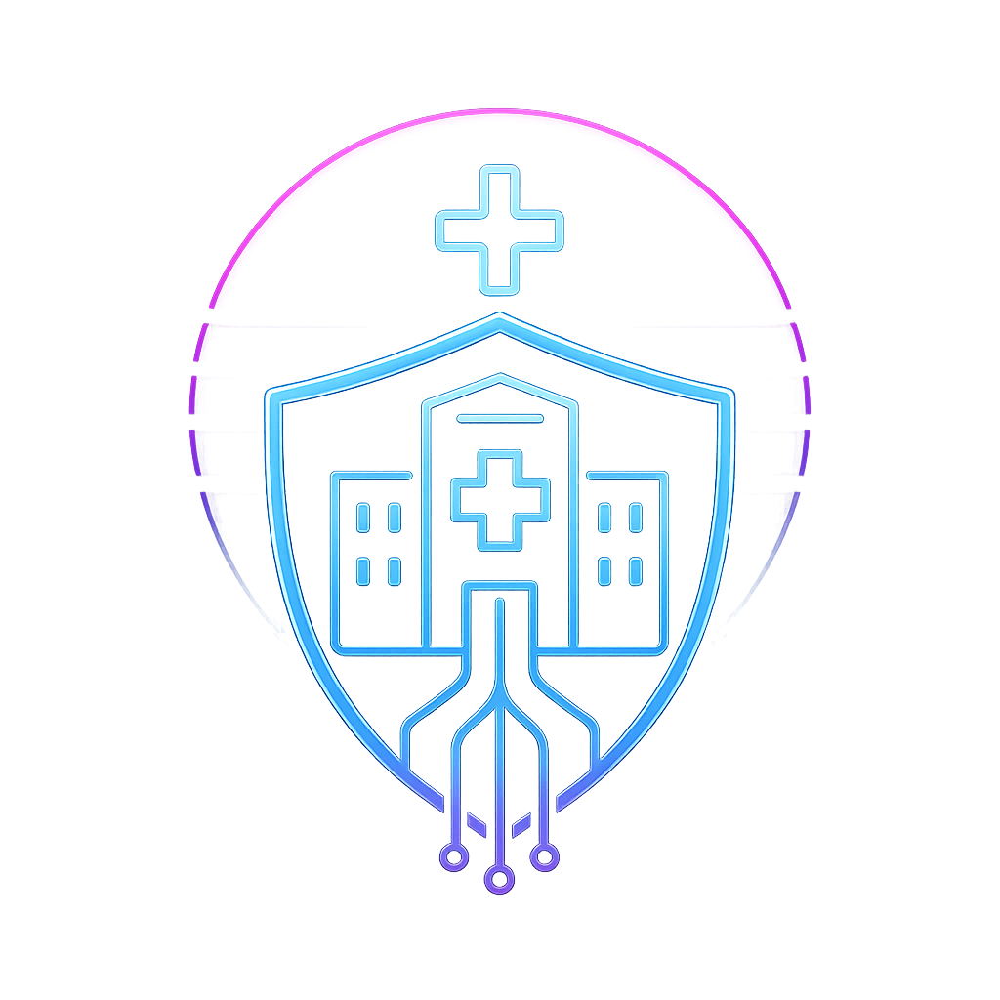

Stage – DORNER Health IT Solutions
- Contexte : Développement d’une appli web médicale (gestion de versions)
- Objectifs : Automatisation, sécurisation des mises à jour
- Compétences clés : PHP, JS, scripting Bash, sécurité web
- Outils : PHP, SQL, Bash, Linux
Résumé :
Application web pour la gestion de versions logicielles médicales. Sécurisation des accès, automatisation des mises à jour, documentation. Travail en équipe pluridisciplinaire, approche fullstack.